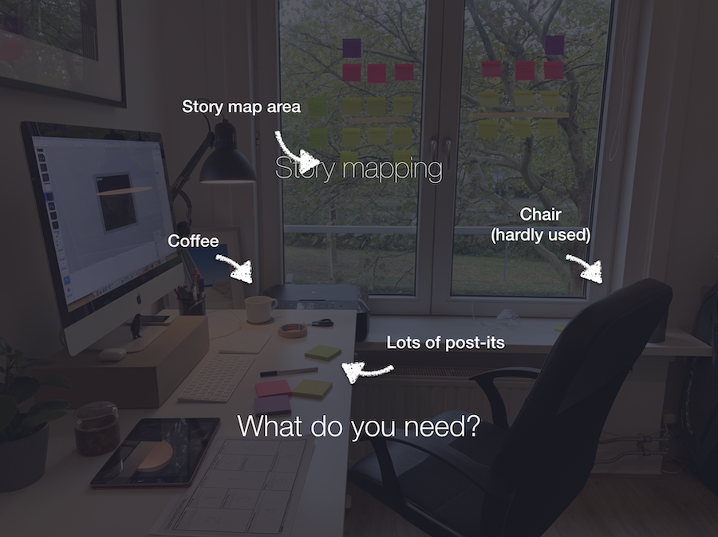
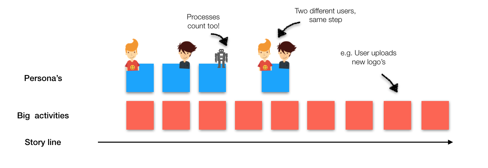
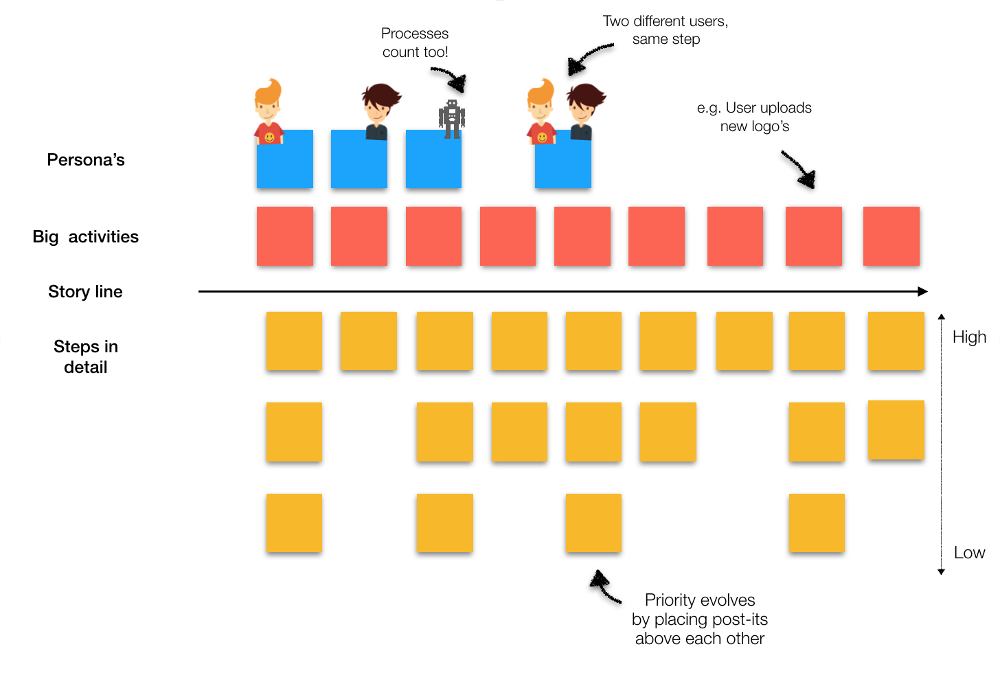
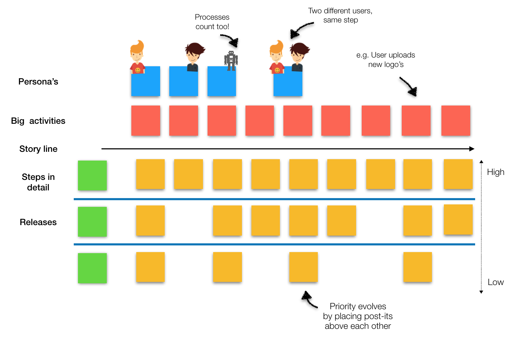

Story mapping
It all revolves around the simple idea of story telling, something we have been doing for ages already. As humans we are much more capable of understanding a message when someone is actively telling us the story while making gestures, creating pictures and or pointing at images. Story mapping is the way to tell stories in software development. Before we can get started, make sure you have made some arrangements.
Personas
The tool aims to measure the loyalty that exists between a provider and a consumer. The NPS is seen as an alternative to traditional customer satisfaction research and claims to be correlated with revenue growth. The NPS has been widely adopted by the bigger part of the Fortune 1000 companies, and for good reasons.
The big picture
Try to go as wide as possible first. Really draw the big strokes. If possible, use post-its of a different color and write on them in really short sentences what happens in chronological order. Try not to worry about all the details, we’ll get to those soon enough. Just make sure to get to the end of the story.
All those details
Now it’s time to go deep. For this phase the ‘talk-and-doc’ method can really help. Make sure everyone has enough post-its, and as you talk through the story, write down all the individual steps. We are really focusing on user tasks here, they are the building blocks of a story map. Details, alternatives, variations, and exceptions fill in the body of the map.
“Minimize output, maximize outcome and impact.”
Release, learning and development strategies
Everything that we come up with are basically assumptions. Assumptions about how we think the real world works. About what our users will need to solve their problems. The truth is, we don’t know what works until we actually try it. A lot can already be figured out by doing proper user testing with a high-fidelity prototype. But when we get to building our product we need to come up with a game-plan on how to build the thing. Try separating your individual ‘releases’ into slices. Every slice can have a specific outcome that the slice wants to achieve, something to learn from. Write down a name on a post-it for every release that you would like to do and also make a note of what you want to achieve with the release: the outcome.
TL;DR
Story mapping is a great technique to minimize the amount of confusion and maximize shared understanding.